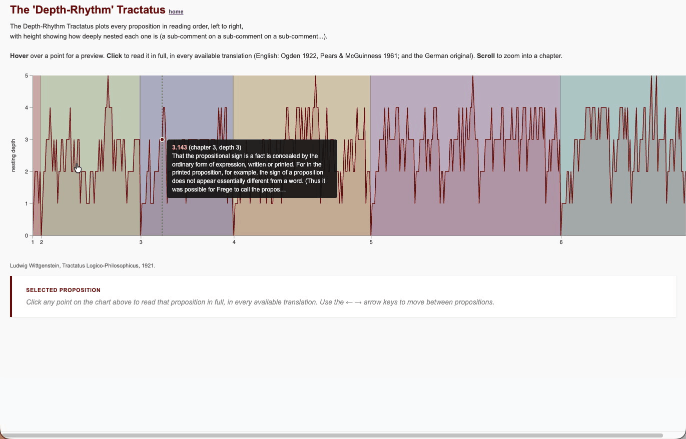
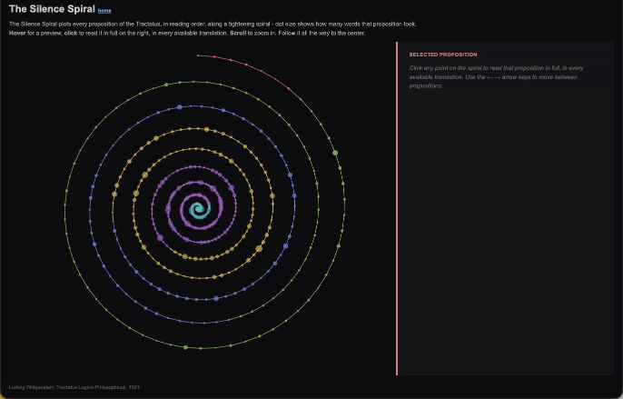
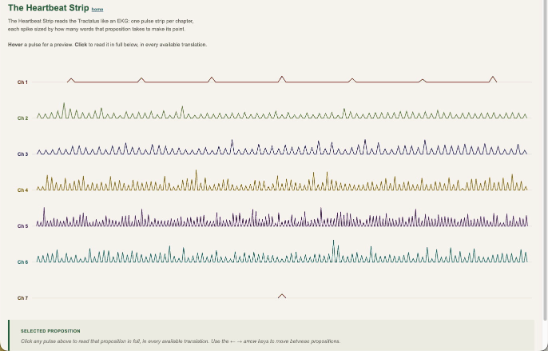
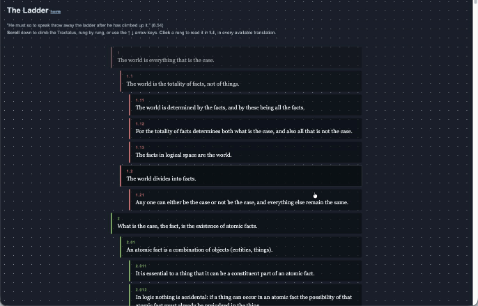
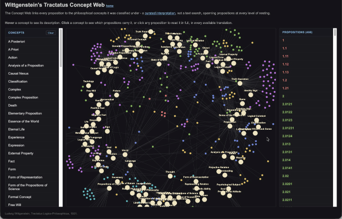

Five new ways to read Wittgenstein's Tractatus
I've spent a bit more time this year on Wittgensteiniana, my long-running side project that turns Wittgenstein's Tractatus Logico-Philosophicus into a set of experimental visualizations. Five of them are worth writing up properly: Depth-Rhythm, Silence Spiral, Heartbeat Strip, The Ladder, and Concept Web.
The starting point for all of them is the same: the Tractatus isn't a normal book. It's 526 numbered propositions, arranged in a strict decimal hierarchy - 1, 1.1, 1.11, 1.12 - where each sub-proposition is a comment on the one above it. That structure is unusual enough that it invites visual treatment on its own, before you even get to the content. So each of these views takes one property of the text - its nesting depth, its length, its ending, its recurring vocabulary - and turns it into a shape.
All five now show the full text in three editions side by side: the 1922 Ogden translation, the 1961 Pears & McGuinness translation, and Wittgenstein's German original. Click into any proposition and a reading panel opens with all three, plus Previous/Next buttons and left/right arrow-key navigation to step through in reading order.
Depth-Rhythm

Rationale. The numbering isn't decorative - it's the argument's scaffolding. A proposition like 6.3751 is four levels deep in commentary on proposition 6.
Depth-Rhythm plots reading order against that nesting depth as a timeline, so you can see, at a glance, where Wittgenstein digs in with long chains of elaboration and where he surfaces back to a bare top-level claim.
Features. Every proposition plotted as a point, positioned by depth; click any point to open the reading panel with all three translations; Previous/Next and arrow-key navigation through the whole book.
Silence Spiral

Rationale. The book famously ends with proposition 7: "Whereof one cannot speak, thereof one must be silent."
Silence Spiral takes that ending literally as a destination - every proposition sits on a spiral that tightens as it goes, converging on 7 at the centre. It's a way of visualizing the whole text as a single movement toward its own limit.
Features. Two-pane layout: the spiral on the left, the reading panel on the right. Dot size is driven by each proposition's word count rather than its position on the spiral, so length becomes visible independently of place in the sequence. Click a dot to read; Previous/Next and arrow keys to move through.
Heartbeat Strip

Rationale. The Tractatus has seven top-level propositions - seven "chapters," in effect - and they don't all move at the same pace. Some are terse, single-line claims; others build through dozens of nested sub-propositions.
Heartbeat Strip renders each chapter as its own EKG-style pulse strip, with spike height mapped to word count, so the pacing of the argument becomes a literal rhythm you can read off the page.
Features. Seven pulse strips, one per chapter, on a warm paper background with a deep green accent. Reading panel below the chart with all three translations; Previous/Next and arrow-key navigation across the flattened reading order spanning all seven strips.
The Ladder

Rationale. Wittgenstein describes his own propositions, near the very end of the book, as a ladder: you climb it, and once you've used it to see the world rightly, you throw it away.
The Ladder takes that metaphor at face value. You scroll upward through a ladder of rungs - one per proposition - and the rungs you've passed dissolve behind you, exactly as the book says they should.
Features. A full-page gradient background running from cool slate at the top to pale blue-white by proposition 7, with a faint dot-grid texture; each rung sits on a dark translucent card so the text stays legible across the whole gradient. Click a rung to open a large overlay with all three translations, Previous/Next buttons, and Escape to close. Up/down arrow keys move along the ladder - scrolling when the overlay is closed, paging through translations when it's open. The dissolve itself is continuous and scroll-linked: opacity and grayscale fade smoothly as a rung crosses out of view, rather than snapping off-screen.
Concept Web

Rationale. This one started life as a placeholder - a graph of propositions linked to whichever of 14 keywords happened to appear in the text. I've since replaced it with something better: a philosophical concept classification I actually did, by hand, studying the Tractatus years ago, encoded at the time in an old Lisp-based system called OCML and sitting unused ever since.
I extracted it, cleaned it up, and rebuilt Concept Web to run on it directly - 99 concepts, each with its own description, linked to the 466 propositions I originally read them into. It's no longer a keyword search standing in for interpretation; it's the interpretation.
Features. A three-panel explorer. On the left, a browsable list of the 99 concepts - hover one to preview the description I wrote for it back then (what "Silence" means in the Tractatus, say, and why); click to select it. In the centre, the force-directed graph itself - concepts as hub nodes, propositions as small satellites coloured by chapter, drag and zoom still work as before, but every edge now reflects an actual reading, not a text match. On the right, a browsable list of propositions - all 466 by default, narrowing to just the selected concept's propositions once you pick one. Click any proposition, in the graph or either sidebar, to open a full-screen reading overlay with all three translations side by side and Previous/Next to step through whichever list is currently active.
PS the data for this visualization is also available as RDF.
Conclusion
None of these are meant to replace reading the book - if anything, they're an argument for reading it more slowly.
The Tractatus keeps insisting on the limits of what can be said, and there's something fitting about trying to say a bit more about it anyway, just not in words...